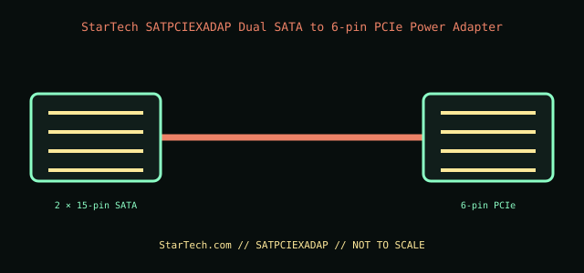

[ INTERNAL PC POWER CABLE // MODEL-SPECIFIC RECORD ]
StarTech SATPCIEXADAP Dual SATA to 6-pin PCIe Power Adapter
StarTech.com manufacturer part SATPCIEXADAP. This record documents only this specified cable assembly; connector fit is not evidence of a matching pinout or PSU compatibility.

PSU SAFETY: Modular PSU-side cable pinouts are proprietary and model-family-specific. Never substitute a modular cable by brand, connector fit, color, or appearance; use only the exact PSU maker-approved cable for the exact PSU model and revision.
Manufacturer specifications
| Manufacturer part | StarTech.com SATPCIEXADAP |
|---|---|
| Connector / pin count | Two 15-contact SATA power input connectors to one 6-pin PCI Express GPU power connector. |
| Wire gauge / length | 18 AWG; 6 in (152.4 mm). |
| Compatible PSU family | Standard device-end SATA power connectors on a PSU harness, for a card with a 6-pin PCIe input. On modular units, use only the PSU’s own approved SATA lead; this adapter does not connect to PSU-side modular sockets and does not make modular cables interchangeable. |
Power and safety caveats
This adapter does not create PSU capacity. Prefer a native PSU PCIe power lead whenever the GPU requires one; do not use SATA conversion to evade a GPU/PSU power requirement or exceed the SATA harness rating. Connect both SATA inputs to appropriate PSU outputs; avoid stacking adapters and monitor for heat.
Case clearance and routing
The adapter body is 6 in. Check that two SATA plugs can reach without tension and that the 6-pin connector has room at the card; do not fold or trap the split leads against drive cages, fans, or the side panel.
Manufacturer specifications and manuals
- StarTech.com — SATPCIEXADAP product pageManufacturer identification of the dual-SATA-to-6-pin PCIe adapter and intended use.
- StarTech.com — SATPCIEXADAP datasheet (PDF)Manufacturer technical sheet for input/output connector counts, length, and wire gauge.
Use current manufacturer documentation for exact model revisions and installation. This archive illustration is a connector-identification schematic, not an electrical pinout.